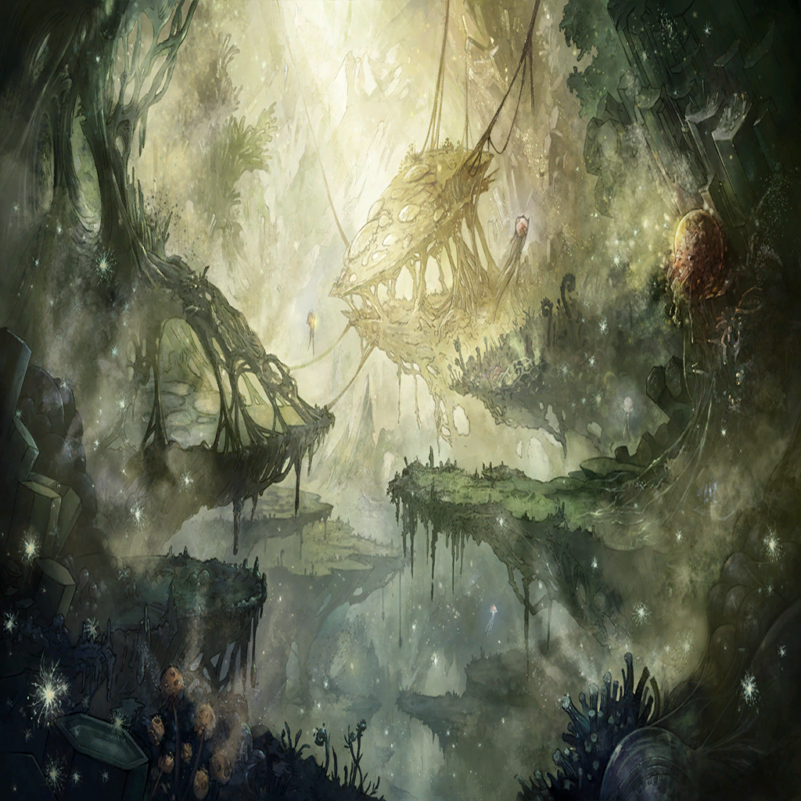

|
|
 |
| ラオン |
…マジかよ
本当に俺の船が空を飛んでやがる… |
| ラオン |
おい、見ろよサリア！
船の下、水も海もなんもねー！ |
| ラオン |
船体への抵抗や軋みはあるのにな
無色透明の海上を滑ってるみたいだぜ |
| ラオン |
これが、マギルの大海を征くってやつか
竜どもは自分だけで
これができるんだもんなー！ |
| サリア |
興奮しきりですね、船長 |
| ラオン |
これが興奮せずにいられるかよ
俺たちは今、まさに！
未知の航路を開拓してるんだぜ!? |
| ラオン |
なあ、セル公！
お前意外とすごいな!? |
| セルジーク |
誰がセル公ですか、誰が！
なんかこのヒト、
加速度的に馴れ馴れしくなってません!? |
| サリア |
すみません…
船長は一度同じ船に乗ったら
もう家族なガバガバ認識なので… |
| セルジーク |
不本意ー!! |
| ラオン |
そう言うなよ、セル公
で、ひとつ疑問なんだが―― |
| ラオン |
これ、着港とかどうするんだ？ |
| セルジーク |
あのですね、ラオン船長 |
| ラオン |
うん？ |
| セルジーク |
他の層に海も港もあるわけないので
基本地面にダイブします |
| ラオン |
…………うん？ |
| サリア |
そ―― |
| サリア |
総員、衝撃に備えてっ!? |
| セルジーク |
あっ、マギル限界ですー
気合いで耐えてくださいねー？ |
| ラオン |
待て…ッ!!! |
|
| ラオン |
お、俺の…！
ロストエンヴィー号がぁぁぁ!? |
|  |

シャヘル |
おっと、これは… |
| リンドレイク |
どうやら、ここまでのようだな
罪に染まった人間どもを操る外法
よくできた術式ではあるが―― |
| リンドレイク |
………… |
| リンドレイク |
その行いが悪であることに変わりはない |
| リンドレイク |
報いの時だ、ハイエルフの鋳型よ
貴様は竜の叡智により生まれた生命
ゆえに、竜種の一端として裁かせてもらう |
シャヘル |
おや、それは嬉しいお言葉ですね
この卑小の身を
竜の末席に数えて頂けるとは |
| リンドレイク |
減らず口を… |
シャヘル |
ですが、さすがは七竜のおひとり
群れ来る有象無象を歯牙にもかけぬ
その威風堂々の振る舞い―― |
シャヘル |
隙あり、と言わせていただきましょうか |
| リンドレイク |
この状況で、何を… |
シャヘル |
“罪よ来たれ、星よ堕ちよ” |
| リンドレイク |
貴様、この気配は――！ |
シャヘル |
楔はもともと、天覆う外殻の一部
ひとつであったものです
であれば、こうして共鳴するのも必然 |
| リンドレイク |
ぬぅ…！ |
| ローレアム |
リンドレイク!? |
| リンドレイク |
来るな、女…！ |
| クェンス |
おいあれ、さすがにヤバくねえか？ |

ザフィリス |
………… |
| クェンス |
ザフィリス…？ |
シャヘル |
さあ、今一度の堕天の時です
至高のその身を穢れに晒し、
罪纏う竜へとお変わりください |
| リンドレイク |
………… |
| リンドレイク |
確かに虚は突かれた。が… |
シャヘル |
おっと、これは―― |
| リンドレイク |
同じ手は二度とは食わぬ
――貴様が罪に堕ちるがいい |
シャヘル |
これは、これは…こ――れは… |
| リンドレイク |
これが、軽々に策を弄した者の末路だ
さて、感情なき貴様は
どのようなモノに堕ちるのか… |
シャヘル |
…まあ、これはこれで |
| リンドレイク |
ぬ…!? |
 |
シャヘル |
ふたつの楔。寛容の竜の魂の一部
そしてこの場に満ちる憤怒のマギル―― |
シャヘル |
これだけ揃えば、
まあ真似事くらいはして見せましょう |
| リンドレイク |
…なんだ？ 我がマギルが――燃える？
まさか貴様…!! |
 |
| シャヘル？ |
憤怒の臨界、ここに在り
竜種の力をお借りする不遜、
この一時は許されよ |
| シャヘル？ |
――――… |
ザフィリス |
…その姿
リンドレイクが罪に堕ちた時と同じ…！ |
| シャヘル？ |
すでに器はできておりますれば
カタチの模倣だけならば、
この卑小の身でも不足なく |
| リンドレイク |
ザフィリス！
竜界の出力を上げろ！ |
ザフィリス |
心得て――…何？ |
ザフィリス |
この身のマギルが、奪われて…？ |
| クェンス |
マジかよ、この感覚…
リンドレイクの竜界と同じ…！ |
| シャヘル？ |
例え虚ろな器であろうと
カタチを似せればそこに神意は宿るもの |
| シャヘル？ |
己の竜界に囚われる気分はいかがですか？
リンドレイク様―― |
| シャヘル？ |
いかがですか、リンドレイク様
その急ごしらえの粗末な器では、
この竜界は堪えるでしょう？ |
| リンドレイク |
ガ、ァ…ッ、貴様…！ |
| シャヘル？ |
少々予定とは異なりますが
このまま御身を吸収し、
今度こそ罪竜となっていただきましょうか |
| シャヘル？ |
さあ、天の意志に打ち勝つ力を今―― |
| シャヘル？ |
…おや |
| リンドレイク |
何をしている…
邪魔だ、下がっていろ… |
| ローレアム |
そうはいかない
だって私の赤の剣は、
こういう時の為のものだからね |
| シャヘル？ |
…ほう、マギルを斬る刃とは
ですが、いつまでもつでしょう |
| ローレアム |
…ここは私が受け持つよ |
| リンドレイク |
待て…！ |
| シャヘル？ |
よく動く…
ならば、一帯を薙ぎ払うまで―― |
ザフィリス |
こちらを忘れてもらっては困るな |
| クェンス |
おっと、いくら竜の力を持っていても
肉体の耐性は変わらないみたいだな |
| クェンス |
今だ！ やれ、ローレアム！ |
| ローレアム |
ありがとう、クェンス君！
…我が剣はカタチ無き者を断つ刃なれば |
| ローレアム |
その借り物の竜界、その借り物の憤怒！
ここで私の剣が断つ…！ |